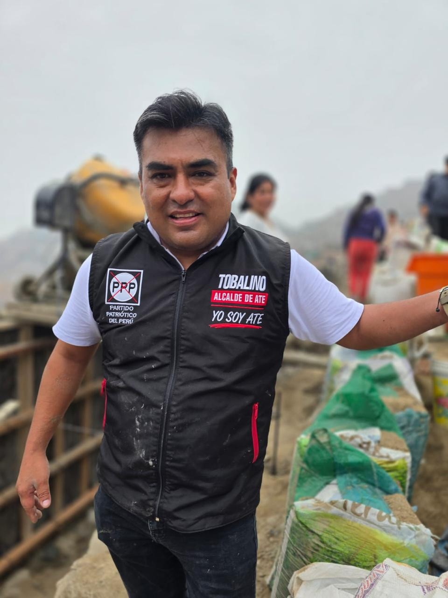
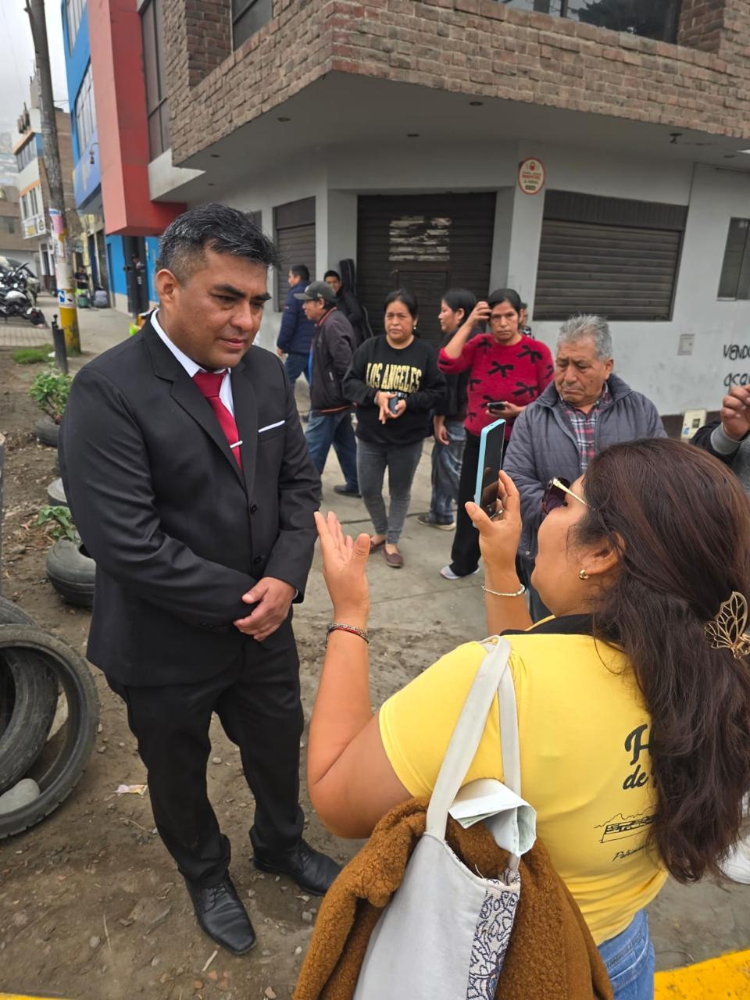
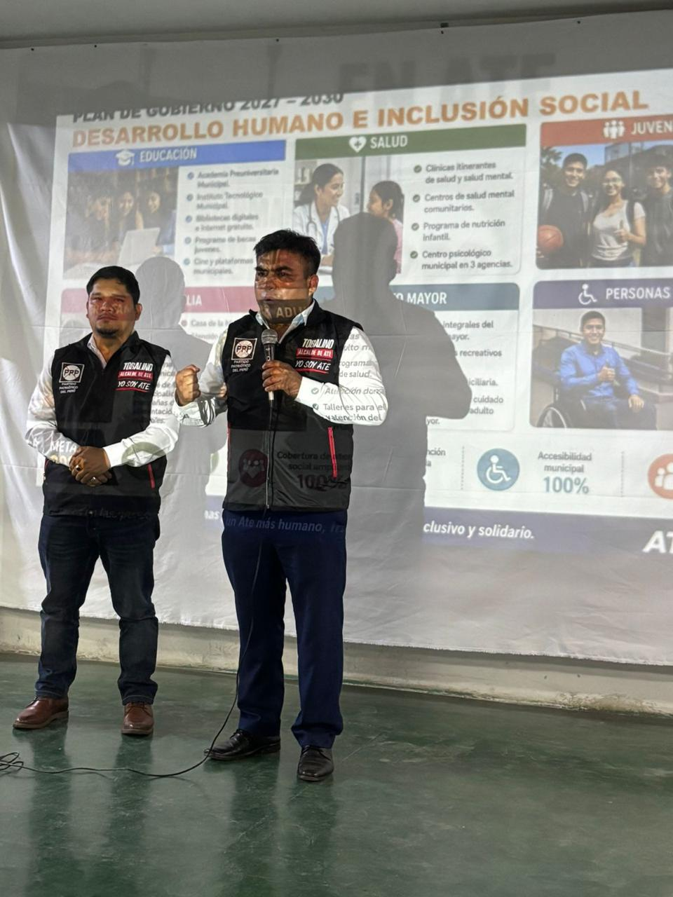
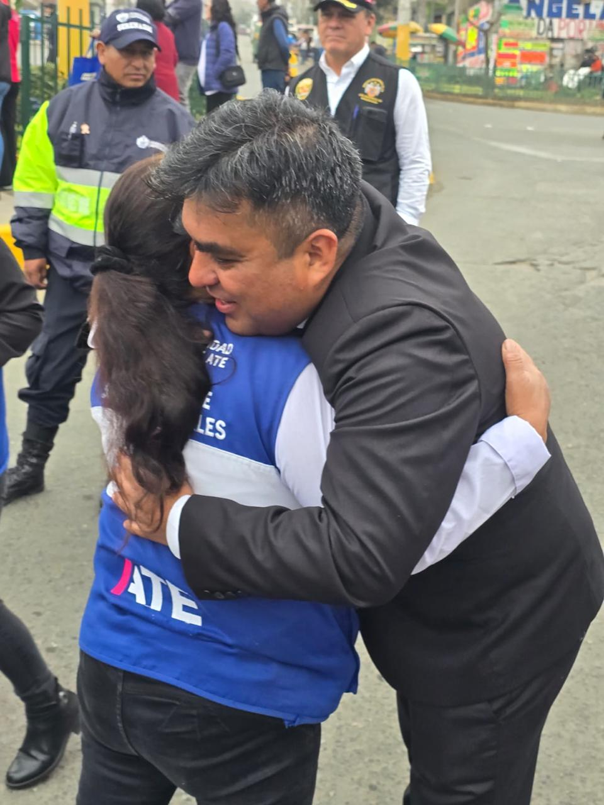

Ate: Ciudad Inteligente,
Segura, Verde y Productiva
Gianmarco Tobalino Castillo presenta un plan de gestión enfocado en seguridad integral, formalización económica, ampliación de áreas verdes y eficiencia administrativa municipal por resultados.

Gianmarco Tobalino
Candidato a Alcalde de Ate
Gianmarco Valentín Tobalino Castillo
"La gestión municipal propuesta se orienta a reconstruir la confianza ciudadana mediante resultados verificables, control público permanente y la aplicación rigurosa de criterios técnicos de desarrollo urbano."
Vecino comprometido con el distrito de Ate, Gianmarco Tobalino postula a la alcaldía respaldado por el equipo técnico y legal del Partido Patriótico del Perú. Su propuesta rechaza los enfoques meramente declarativos y adopta una planificación basada en la metodología de CEPLAN (Centro Nacional de Planeamiento Estratégico).
El plan de gobierno aborda de forma sincera las problemáticas críticas de Ate: un alto índice de delitos patrimoniales, un déficit ambiental severo de áreas verdes por habitante y trabas administrativas para la formalización del motor comercial del distrito.
Líneas de Acción:
Cada propuesta del plan cuenta con una estructura de viabilidad: competencia municipal directa, fuente de financiamiento identificada, responsables institucionales definidos y una evaluación trimestral mediante metas físicas anuales.
Unirse a la CampañaEjes Estratégicos de Gestión
Deslice horizontalmente para recorrer cada eje de gobierno o use los accesos directos superiores.
Ideario del Partido Patriótico del Perú
"Patriotismo cívico, servicio al ciudadano, transparencia, integridad y defensa del interés público como pilares esenciales de la administración."
Gianmarco en la Comunidad
Crónica de actividades, escucha activa y supervisión técnica en los barrios de Ate.

TRABAJO DE CAMPOInspección de Obras en las Zonas Altas
Supervisión directa de laderas y accesos para proyectar muros de contención viables y escaleras seguras.

ESCUCHA ACTIVADiálogo Abierto con los Vecinos
Reunión vecinal para escuchar de primera mano los problemas críticos de seguridad y alumbrado público.

PLAN DE GOBIERNOSustentación de Desarrollo Humano
Exposición técnica de las propuestas para consultorios de salud mental gratuitos y el Comité de Damas.

VOLUNTARIADOEncuentro y Trabajo con Voluntarios
Coordinación con los comités cívicos de jóvenes y vecinos comprometidos con la difusión del plan.
Buzón Ciudadano y Enlace de Reporte
Utiliza este espacio para reportar incidentes del distrito relacionados con inseguridad, acumulación de basura en la vía pública o baches en avenidas principales. La información ayudará a actualizar el mapa local de intervenciones prioritarias.
Puedes canalizar tu reporte de manera directa usando el celular de la central de campaña o mediante correo electrónico.
Reporte Registrado
El reporte ha sido procesado por el equipo técnico. Si lo deseas, puedes compartir los datos por WhatsApp para agilizar el análisis.
Compartir por WhatsAppPanel de Diagnóstico Territorial de Ate
Selecciona una de las siete zonas del distrito para visualizar las problemáticas críticas identificadas por el equipo técnico y las propuestas específicas de gestión.
Zona 1: Salamanca / Olimpo
Congestión vial pesada en accesos, necesidad de mantenimiento preventivo de áreas verdes en urbanizaciones y mejora de seguridad en paraderos comerciales.
Acción prioritaria:
Instalación de la Base N. 1 de Serenazgo, reordenamiento del tránsito en accesos principales e iluminación LED completa de parques y paraderos.
Formar parte del Voluntariado
Regístrese para colaborar en las comisiones de trabajo local y difusión de las propuestas en el distrito.
Datos Personales
Comisión de Interés
Selecciona las comisiones en las que deseas prestar apoyo voluntario:
Confirmación de Registro
Revisa la información proporcionada antes de confirmar tu registro como colaborador de campaña en el distrito.
Registro Completado
Sus datos han sido consolidados por el equipo organizador del Partido Patriótico del Perú en Ate. Nos comunicaremos a la brevedad para coordinar la incorporación a la comisión respectiva.
Coordinar por WhatsApp